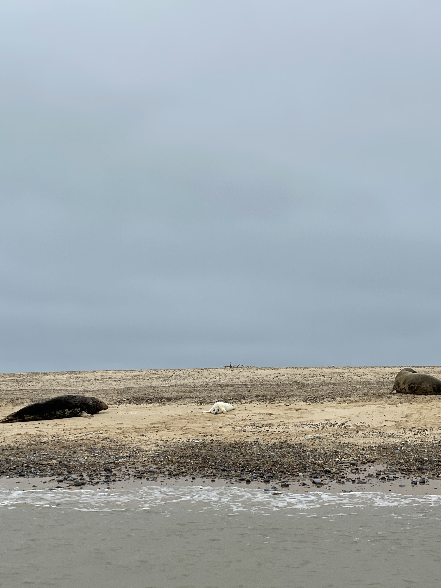
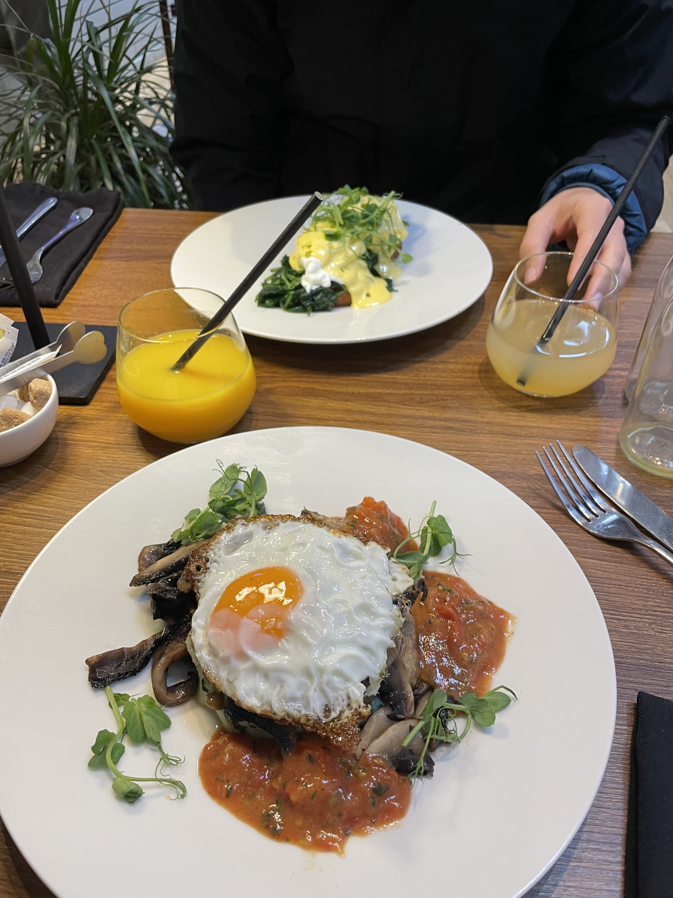

15th November 2025
We had travelled by train the night before and in strong winds and rain took a taxi to Field Dalling where our tiny home was waiting. After a failed battle lighting a fire when the electricity went out for a few hours we fell asleep cozy and warm. We woke up to cloud and fog but this didn't dampen our spirits as we hopeed on the Bromptons, determined to ride to our breakfast spot. Through busy roads with barely enough width for one car to abadoned muddy paths we pushed through to a charming and bustling breakfast spot. Then it was time for the main event. Down to the harbour we went to hop on a boat. Unfortunately, we were dalyed as the boat to take us out was stranded on land. This was a common occurence for these parts. The marshes were heavily influenced by low and high tide and so at one point of the day you might only see mud and beached boats but then you almost cant believe it as the tide comes rolling in and carrying water that lifted the boats and meant we could get underway. We rode out a bit, our eyes peeled for the famous animal of the area; seals. We were lucky to see a few bobbing playfully in and out of the water, their heads curiously watching as our boat sailed past. But then, we got to a remote beach and found hundreds of seals resting on the sand. We even saw their newborn pups with white fur, yet to develop the grey colour. It was a fantastic sight to see and Sophie and I were both taken aback at the number of them. After returning and stopping for lunch at a pub we cycled back to our tiny home and settled in for the night.

16th November 2025
We woke up, sad that our short vacation would be over. But to make the most of our time we took to our cycles again and ventured to find some breakfast. We crossed stunning rivers and cute villages with some amazing spots to eat. Unfortunately, we ran out of time to properly explore all that this area had to offer. We didn't get a chance to explore the main town of Holt before the taxi arrived to whisk us back to Sharingham and then onto London. A short but eventful trip!